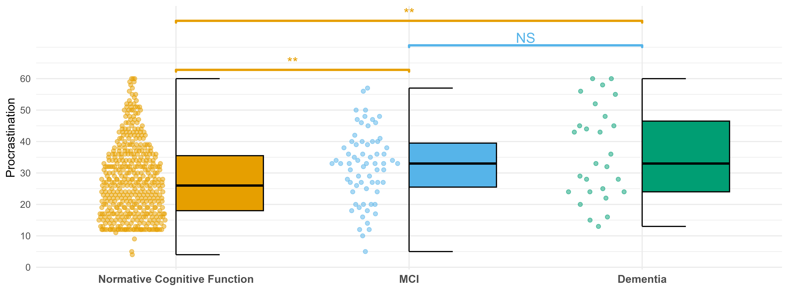

![]()
| Full sample (n = 549) | NC (n = 452) | MCI (n = 86) | Dementia (n = 11) | |
|---|---|---|---|---|
| Note: Descriptives for continuous and categorical variables are represented using means ± standard deviations and percentages and frequencies respectively. NC = Normative cognitive function; MCI = Mild cognitive impairment; GED = General Educational Development. | ||||
| a Procrastination scores were collected in 2020 (Wave 3) and are presented here for descriptive comparison, although they were not measured at baseline. | ||||
| Age (years) | 69.70 ± 7.58 | 69.70 ± 7.55 | 69.60 ± 7.55 | 70.00 ± 9.89 |
| Sex | Sex | Sex | Sex | Sex |
| Male | 38.43% (n = 211) | 39.82% (n =180) | 32.56% (n = 28) | 27.27% (n = 3) |
| Female | 61.57% (n = 338) | 60.18% (n = 272) | 67.44% (n = 58) | 72.73% (n = 8) |
| Education | Education | Education | Education | Education |
| No degree | 16.24% (n = 98) | 10.56% (n = 47) | 39.53% (n = 34) | 63.54% (n = 7) |
| GED | 51.58% (n = 279) | 51.91% (n = 231) | 52.33% (n = 45) | 27.27% (n = 3) |
| Further education | 32.29% (n = 175) | 37.53% (n = 167) | 8.14% (n = 7) | 9.09% (n = 1) |
| Apathy | 0.37 ± 0.63 | 0.31 ± 0.59 | 0.65 ± 0.76 | 0.36 ± 0.51 |
| Procrastinationa | 28.60 ± 12.00 | 27.70 ± 11.30 | 32.10 ± 13.80 | 39.00 ± 16.00 |
Procrastination as a Marker of Cognitive Decline: Evidence from Longitudinal Transitions in the Older Adult Population
Abstract
Cognitive decline is a global health concern, making the identification of early, modifiable risk factors essential. While apathy is a recognized prodromal marker, procrastination may also signal early executive dysfunction. We used longitudinal secondary data from the United States Health and Retirement Study among adults aged 60+ \((n = 549; \bar{x} = 69.70;\sigma = 7.58)\). Cognitive function, procrastination, and a proxy measure of apathy were assessed. Transitions between normative cognitive function, mild cognitive impairment (MCI), and dementia were modeled using a discrete-time first-order Markov model. Procrastination scores were higher among individuals with MCI or dementia than those with normative cognitive function. Procrastination also interacted with age, disproportionately increasing the risk of decline in the oldest participants. Procrastination was associated with cognitive impairment and predicted transitions to MCI, suggesting it may serve as both an early behavioral marker and compounding risk factor.
Keywords
Dementia risk, Mild cognitive impairment, Procrastination, Apathy, Executive dysfunction, Aging
Method
Data and study population
Analyses were conducted using a secondary data source; a multi-wave prospective cohort study called the Health and Retirement Study (HRS; (Fisher & Ryan, 2018), which tracks the health, economic, and social well-being of over \(18,000\) American adults primarily aged \(50+\). The HRS is managed by the Institute for Social Research at the University of Michigan, with data collected every two years. Initial data collection of a participant is conducted through a face-to-face interview, with follow-up biennial interviews conducted either by phone or face-to-face. The average retention rate ranges from \(68.8\%\) to \(92.3\%\) (Health and Retirement Study, 2017). At the time of writing, fifteen years of HRS data are currently archived.
We focused on four waves of HRS data from 2016 to 2022. Specifically, our study sample consisted of respondents who participated in an experimental module assessing procrastination during the 2020 wave. These experimental modules, administered at the end of the core HRS interview, consist of concise questionnaires designed to explore new topics or supplement existing core survey data (Juster & Suzman, 1995). Each respondent receives only one experimental module, with sample sizes for each module constituting approximately 10% of the core sample. As a result, while the core HRS sample includes approximately \(18,000\) respondents, our initial sample of interest consisted of \(1,368\) respondents. We excluded respondents with missing cognitive assessment data for any wave \((n = 419)\), those under 60 years of age, (as cognitive symptoms typically occur around this age \(n = 398\)), and those with complete missing values across the procrastination measure \((n = 2)\). This resulted in a final analytic sample of \(549\) respondents.
Measures
Outcome: Cognitive Function and Cognitive Category
Cognitive function in the HRS is assessed using a series of tests adapted from the Telephone Interview for Cognitive Status (TICS; (Brandt et al., 1988; Fong et al., 2009). These tests include an immediate and delayed \(10\)-noun free recall test (to assess episodic memory), a serial seven subtraction test (to assess working memory), and a backward count from \(20\) test (to assess mental processing). Based on these assessments, Crimmins et al. (2011) developed both a \(27\)-point cognitive scale and validated cut-off points to assess and classify cognitive status. Using these points, respondents who scored \(12 - 27\) were classified as having normal cognition, \(7 - 11\) as having MCI, and \(0 - 6\) as having dementia.
Predictor: Procrastination
Procrastination was measured using the Pure Procrastination Scale (Steel, 2010), a psychometrically validated scale for evaluating procrastination when conceptualized as a dysfunctional delay. The PPS consists of 12 items rated on a Likert scale ranging from \(1\) (strongly disagree) to \(5\) (strongly agree). In responding to the scale items, participants were asked to reflect on their general behavioural tendencies, with no specific time-frame provided. Total procrastination scores range from \(12\) to \(60\), with higher scores indicating greater tendency to procrastinate. In the HRS, the PPS was administered only in wave 3 (2020) of the respective waves. As such, we use the wave 3 measure as both a retrospective and prospective proxy for procrastination scores across all waves in the analysis. This approach assumes relative temporal stability in procrastination over the study period. In this sample, the PSS had a Cronbach’s \(\alpha\) score of 0.92, indicating high internal consistency. In responding to the scale items, participants were asked to reflect on their general behavioural tendencies, with no specific time-frame provided. An example of a question from the scale includes ``I delay making decisions until it’s too late”.
Covariate: Apathy
While no direct measure of apathy exists within the HRS, we utilised two questions from the eight-item version of the Center for Epidemiological Studies Depression (CES-D8) scale (Briggs et al., 2018) as proxies for apathy: “You felt that everything you did was an effort” and “You could not get going”. Both items capture core features of apathy (behavioural and motivational disengagement) and, while not a comprehensive measure of apathy, provide a valid and pragmatic approximation for modelling purposes. Each item was measured on a binary “yes/no” scale with total scores ranging from $0$ to $2$.
Confounders
To account for potential confounding, we controlled for demographic variables with established associations with both cognitive function and procrastination (VanderWeele, 2019). These included measures of age, sex, and educational attainment (Abner et al., 2012; Freedman & Cornman, 2024; Yu et al., 2013). Educational attainment was classified into three categories: no formal education, GED (General Educational Development)/high school diploma, and college/further education.
Data Analysis
All data analysis was carried out in R (R Core Team, 2025). To model transitions in cognitive states over time, we employed a first order discrete-time Markov model, a class of stochastic processes that satisfy the Markov property (Y. F. Zhang et al., 2010), which can be formally expressed as:
\[P(X_{t+1} = j \vert X_t = i, X_{t-1} = i_{t-1}, \dots X_0 = i_0) = P(X_{t+1} = j \vert X_t = i)\]
This property asserts that the probability of transitioning from state \(X_t = i\) to a future state \(X\_{t+1} = j\) depends only on the current state \(X_t\), and not on the full history of preceding states. Here, there are three potential states: normative cognitive function, mild cognitive impairment, and dementia. We consider dementia to be an absorbing state, i.e. once an individual reaches this state, they cannot return to the other states in a future time point.
Unlike continuous-time models, discrete-time Markov models are not readily supported by a dedicated R package for deriving transition probabilities. Therefore, we implemented the model manually using multinomial logistic regression from the nnet package (Venables & Ripley, 2002). This approach estimates the log-odds of transitioning to each non-reference state as a linear function of covariates, relative to a chosen reference category. For a system with \(K\) cognitive states (with state \(K\) as the reference), the model takes the form:
\[log \frac{P(Y = j \; \vert \; x)}{P(Y = K \vert x)} = \beta_0 + \beta_j^\top x \qquad \text{for } j = 1, \dots K-1\]
From these equations, the predicted transition probabilities for the non-reference states \(j = 1, \dots, K - 1\) are derived as:
\[P(Y = j \vert x) = \frac{e^{\beta_{0j} + \beta_j^\top x}}{1 + \sum^{K - 1}_{k = 1} e^{\beta_{0k} + \beta_k^ \top x}}\]
and for the reference state \(K\) as:
\[ P(Y = K \; \vert \; x) = \frac{1}{1 + \sum^{K - 1}_{k = 1} e^{\beta_{0k} + \beta_j^ \top x }} \]
To assess model fit and guide model selection for covariates in the \(\beta_j\) vectors, we conducted likelihood-ratio tests comparing full and reduced models, whose test statistic is defined as:
\[ D = 2 \times (\ell_{\text{reduced}} - \ell_{\text{full}}) \]
where \(\ell_{\text{full}}\) and \(\ell_{\text{reduced}}\) denote the log-likelihoods of the respective models. Under the null hypothesis that the full model does not represent an improved fit when compared to the reduced model, \(D\) has an asymptotic \(\chi^2\) distribution with degrees of freedom corresponding to the difference between the numbers of parameters estimated by the two models.
Results
Our final analytic sample comprised \(549\) respondents with the following age distribution: 60 - 70 \((n = 186)\), 71 - 80 \((n = 203)\), 81 - 90 \((n = 142)\), and 90+ \((n = 18)\). Descriptive statistics for the full sample, as well as data stratified by cognitive status (normative cognitive function, MCI, and dementia), are presented in Table 1. Both Figure 1 and supplementary figure S1 capture the unconditional transitions and transition probabilities (respectively) between wave one and two (first transition), wave two and three (second transition), and wave three and four (third transition), yielding a total of \(1,647\) observed transitions over time.

Cross sectional differences
Initially, a Kruskal-Wallis test was conducted to examine differences in procrastination scores (measured in 2020) across three cognitive status groups after Levene’s test indicated violation of homogeneity of variance \((p = 0.039)\). The analysis revealed a statistically significant effect of cognitive status, \((\chi^2(2) = 17.54, p < .001)\), indicating that procrastination levels differed significantly between at least two of the groups. Post-hoc analysis using a pairwise Wilcoxon rank-sum test with a Benjamini-Hochberg correction showed that participants with normal cognition \((M = 27.7, SD = 11.7)\) reported significantly lower levels of procrastination than those with both MCI \((M = 32.1; SD = 11.3; p = 0.004)\) and dementia \((M = 36.2; SD = 14.8; p = 0.005)\). No significance difference was found between those with MCI and dementia \((p = 0.334)\). Figure 2 displays the distribution of procrastination scores across groups, with both boxplots and dotplots showing median values and individual data points. Significance bars indicate the pairwise differences described above.

Markov analysis
Results from the discrete-time Markov analysis, showed that all covariates significantly influenced the likelihood of transitioning between cognitive states (see Figure 3). Notably, procrastination interacted significantly with age to affect two key transitions: increasing the likelihood of transitioning from normative cognitive function to MCI \((\text{OR} = 1.001; p < 0.001)\) and decreasing the likelihood of reverting from MCI to normative cognitive function \((\text{OR} = 0.999; p < 0.001)\). Women were significantly less likely than men to transition from both normative cognitive function to dementia \((\text{OR} = 0.068; p < 0.001)\) and from MCI to dementia \((\text{OR} = 0.70; p < 0.001\)).
For education attainment, individuals with a GED were less likely to transition from normative cognitive function to either MCI \((\text{OR} = 0.49; p < 0.001)\) or dementia \((\text{OR} = 0.29; p < 0.001)\) and from MCI to dementia \((\text{OR} = 0.64; p < 0.001)\). They were also more likely to back transition from MCI to normative cognitive function \((\text{OR} = 2.18; p < 0.001)\). Those with a college level education or higher demonstrated a significantly reduced likelihood of transitioning from normative cognitive function to either MCI \((\text{OR} = 0.32; p < 0.001)\) or dementia \((\text{OR} = 0.07; p < 0.001)\) and from MCI to dementia \((\text{OR} = 0.22; p < 0.001)\). They were also more likely to back transition from MCI to normative cognitive function \((\text{OR} = 3.13; p < 0.001)\).
Finally, higher levels of apathy were associated with an increased likelihood of transitioning from normative cognitive function to both MCI \((\text{OR} = 1.35; p = 0.005)\) and dementia \((\text{OR} = 1.36; p<0.001)\) and a decreased likelihood of transitioning from MCI back to normative cognitive function \((\text{OR} = 0.74; p = 0.003)\).

Figure 4 presents the predicted transition probabilities across varying levels of age and procrastination. These estimates illustrate how the interaction between age and procrastination influences the likelihood of progressing between cognitive states over time. Notably, while transition probabilities remain relatively stable at very low levels of procrastination, substantial shifts emerge as both age and procrastination increase. In particular, older individuals with higher procrastination scores show an elevated probability of cognitive decline transitioning from normative cognitive function to mild cognitive impairment (MCI) and a reduced likelihood of transitioning back from MCI to normative cognitive function, highlighting the compounded risk posed by these two variables in later life.

Discussion
Dementia poses a growing global health burden, with modifiable risk factors and prodromal markers offering important targets for intervention (Livingston et al., 2020, 2024). While apathy has been well established as a prodromal marker and predictor of dementia (Donovan et al., 2014; Fresnais et al., 2023; Salem et al., 2023; van Dalen et al., 2018), emerging evidence suggests that procrastination may also signal early cognitive dysfunction (Fridén, 2020; S. Zhang et al., 2019). This study examined whether procrastination, particularly in later life, could serve as a predictor of cognitive decline. We assessed both cross-sectional differences in procrastination across three cognitive groups (normative cognitive function, MCI and dementia) and longitudinal associations with transitions in cognitive status, to clarify whether procrastination functions as a novel and age-sensitive marker of emerging cognitive impairment.
Our analysis revealed significant group differences in procrastination, with individuals experiencing cognitive impairment, both MCI and dementia, reporting higher procrastination scores than those with normative cognitive function. These findings support the hypothesis that procrastination may be associated with cognitive decline and aligns with emerging evidence linking procrastination to cognitive dysfunction (Fridén, 2020; S. Zhang et al., 2019). Interestingly, while both MCI and dementia groups exhibited elevated procrastination scores, no significant difference emerged between these two groups. This suggests that increases in procrastination may occur relatively early in the neurodegenerative process, potentially preceding or paralleling the emergence of more overt cognitive symptoms.
However, it should be noted that the number of participants classified as having MCI \((n = 67)\) or dementia \((n = 27)\) was relatively small compared to those with normative cognitive function \((n = 455)\). This imbalance in group sizes may have limited the sensitivity of our comparisons and raises the possibility that subtle differences between MCI and dementia groups were obscured by statistical power constraints. Future research should aim to replicate these findings in more evenly distributed samples to better determine whether procrastination continues to increase across progressive stages of impairment or plateaus following early decline.
Beyond these cross-sectional differences, our discrete-time Markov analysis offered insight into how procrastination alongside other demographic and psychological factors, influences the likelihood of transitioning between cognitive states over time. Notably, procrastination emerged as a dynamic predictor of cognitive change, interacting with age to significantly increase the odds of transitioning from normative cognitive function to MCI, while simultaneously decreasing the odds of moving from MCI back to normative cognitive function.
These findings imply that procrastination may serve dual roles, both as a marker of early cognitive dysfunction and, potentially, as a behavioral impediment to moving from MCI state to the normative cognitive state. One plausible pathway involves the reinforcement of maladaptive behaviors such as reduced cognitive engagement or reduced participation in cognitively protective activities, such as physical exercise, social interaction or medical adherence (Hajek et al., 2025; Kelly & Walton, 2021; Sirois, 2007; Stead et al., 2010). In parallel, procrastination has been associated with chronic stress and elevated cortisol levels (Sirois, 2023), which may accelerate hippocampal atrophy, β-amyloid plaque deposition, and brain inflammation (Franks et al., 2021; Wallensten et al., 2023), further undermining cognitive resilience. These behavioral and biological mechanisms align with self-regulation theories suggesting that procrastination reflects executive dysfunction (Rozental & Carlbring, 2014; Steel, 2007), an early feature of neurodegenerative progression (Clark et al., 2012).
The observed interaction with age (see Figure 4) suggests that the influence of procrastination on cognitive trajectories may grow stronger with advancing age, a period during which neuro-plasticity diminishes, and behavioral risk factors exert greater influence (Livingston et al., 2020, 2024). This effect was particularly pronounced among the oldest participants. As illustrated in Figure 4, the effect of procrastination is relatively modest for younger-older adults (those age 70). However, the slope of these transitions steepens considerably for individuals aged 80 and especially for those age 90. These findings indicate that procrastination is increasingly associated with a higher risk of cognitive decline and a lower likelihood of improvement in cognitive status in late old age.
This pattern underscores the possibility that procrastination functions as a compounding risk factor in older adulthood, particularly among the oldest individuals, by both reflecting emerging cognitive difficulties and potentially accelerating their progression. In younger-old adults, cognitive reserve and compensatory mechanisms (Gooijers et al., 2024) may buffer against the impact of poor self-regulation. However, as individuals reach more advanced ages, these protective systems weaken (Roberts et al., 2015). Consequently, maladaptive behavioral tendencies like procrastination can exert a disproportionate toll on cognitive function. These findings underscore the potential value of addressing behavioral regulation and self-management in older adults as part of broader dementia risk-reduction strategies, particularly for those of a much older age.
By revealing a significant interaction between age and procrastination, this study highlights the importance of broadening dementia risk models to incorporate dynamic lifestyle and psychological variables. Procrastination, as both a modifiable and measurable behavioral tendency (van Eerde & Klingsieck, 2018), represents a promising target for low-cost, non-invasive interventions aimed at enhancing cognitive resilience in older populations. Tracking self-regulatory behavioral tendencies such as procrastination may offer an early warning system for emerging cognitive risk, opening avenues for preventative action before irreversible decline takes hold.
Limitations
Despite the insights offered by this study, several limitations should be considered. Most notably, although our longitudinal Markov modelling approach captured changes in cognitive status, a key constraint was the measurement of procrastination at only a single time point (2020). As a result, we assumed temporal stability in procrastination scores across time and used this measure as both a retrospective and prospective proxy for procrastination scores. However, this precluded analysis of within-person changes in this behavior over time and whether such changes affect cognitive transitions. It should be noted that this limitation is inherent to the HRS dataset rather than a methodological oversight (Juster & Suzman, 1995). Future studies should prioritise repeated assessments of procrastination to determine whether increases in procrastination precedes, accompanies, or follows cognitive decline. Moreover, our use of a proxy measure of apathy may not have fully captured the multidimensional nature of apathy. Future research should incorporate more validated apathy assessments to strengthen the behavioral inferences drawn.
Additionally, as noted earlier, the relatively small number of individuals in the MCI and dementia groups may have constrained statistical power for certain comparisons and increased the potential for misclassification bias. Finally, while the models adjusted for several key demographic and psychological covariates, unmeasured confounding (undiagnosed medical conditions, medication use, or sleep quality) could also have influenced cognitive outcomes. Future research should seek to replicate and extend these findings using more clinically diverse samples.
Conclusions
In summary, this study offers preliminary evidence that procrastination may function as an early behavioral tendency marker of cognitive decline, particularly in older age. Individuals with MCI and dementia reported higher procrastination scores, and longitudinal modelling revealed that procrastination, especially when coupled with advancing age, was predictive of increased cognitive decline. These findings underscore the importance of everyday self-regulatory behaviors in dementia risk and resilience. As a modifiable and measurable construct, procrastination holds promise as a target for early detection and preventative intervention strategies aimed at sustaining cognitive health in ageing populations.
References
Abner, E. L., Kryscio, R. J., Cooper, G. E., Fardo, D. W., Jicha, G. A., Mendiondo, M. S., Van Eldik, L. J., Wan, L., & Schmitt, F. A. (2012). Mild cognitive impairment: Statistical models of transition using longitudinal clinical data. International Journal of Alzheimer’s Disease, 2012(1), 291920. https://doi.org/10.1155/2012/291920
Brandt, J., Spencer, M., & Folstein, Marshal. (1988). The telephone interview for cognitive status. Neuropsychiatry, Neuropsychology, and Behavioral Neurology, 1(2), 111–117.
Briggs, R., Carey, D., O’Halloran, A. M., Kenny, R. A., & Kennelly, S. P. (2018). Validation of the 8-item centre for epidemiological studies depression scale in a cohort of community-dwelling older people: Data from the irish longitudinal study on ageing (TILDA). European Geriatric Medicine, 9, 121–126. https://doi.org/10.1007/s41999-017-0016-0
Chowdhary, N., Barbui, C., Anstey, K. J., Kivipelto, M., Barbera, M., Peters, R., Zheng, L., Kulmala, J., Stephen, R., Ferri, C. P., et al. (2022). Reducing the risk of cognitive decline and dementia: WHO recommendations. Frontiers in Neurology, 12, 765584. https://doi.org/10.3389/fneur.2021.765584
Clark, L. R., Schiehser, D. M., Weissberger, G. H., Salmon, D. P., Delis, D. C., & Bondi, M. W. (2012). Specific measures of executive function predict cognitive decline in older adults. Journal of the International Neuropsychological Society, 18(1), 118–127. https://doi.org/10.1017/s1355617711001524
Cooper, C., Sommerlad, A., Lyketsos, C. G., & Livingston, G. (2015). Modifiable predictors of dementia in mild cognitive impairment: A systematic review and meta-analysis. American Journal of Psychiatry, 172(4), 323–334. https://doi.org/10.1176/appi.ajp.2014.14070878
Crimmins, E. M., Kim, J. K., Langa, K. M., & Weir, D. R. (2011). Assessment of cognition using surveys and neuropsychological assessment: The health and retirement study and the aging, demographics, and memory study. Journals of Gerontology Series B: Psychological Sciences and Social Sciences, 66, i162–i171. https://doi.org/10.1093/geronb/gbr048
Donovan, N. J., Wadsworth, L. P., Lorius, N., Locascio, J. J., Rentz, D. M., Johnson, K. A., Sperling, R. A., Marshall, G. A., Initiative, A. D. N., et al. (2014). Regional cortical thinning predicts worsening apathy and hallucinations across the Alzheimer disease spectrum. The American Journal of Geriatric Psychiatry, 22(11), 1168–1179. https://doi.org/10.1016/j.jagp.2013.03.006
Fahed, M., & Steffens, D. C. (2021). Apathy: Neurobiology, assessment and treatment. Clinical Psychopharmacology and Neuroscience, 19(2), 181. https://doi.org/10.9758/cpn.2021.19.2.181
Fisher, G. G., & Ryan, L. H. (2018). Overview of the health and retirement study and introduction to the special issue. Work, Aging and Retirement, 4(1), 1–9. https://doi.org/10.1093/workar/wax032
Fong, T. G., Fearing, M. A., Jones, R. N., Shi, P., Marcantonio, E. R., Rudolph, J. L., Yang, F. M., Kiely, D. K., & Inouye, S. K. (2009). Telephone interview for cognitive status: Creating a crosswalk with the mini-mental state examination. Alzheimer’s & Dementia, 5(6), 492–497. https://doi.org/10.1016/j.jalz.2009.02.007
Franks, K. H., Bransby, L., Saling, M. M., & Pase, M. P. (2021). Association of stress with risk of dementia and mild cognitive impairment: A systematic review and meta-analysis. Journal of Alzheimer’s Disease, 82(4), 1573–1590. https://doi.org/10.3233/jad-210094
Freedman, V. A., & Cornman, J. C. (2024). Dementia prevalence, incidence, and mortality trends among US adults ages 72 and older, 2011–2021. The Journals of Gerontology, Series A: Biological Sciences and Medical Sciences, 79, S22–s31. https://doi.org/10.1093/gerona/glae105
Fresnais, D., Humble, M. B., Bejerot, S., Meehan, A. D., & Fure, B. (2023). Apathy as a predictor for conversion from mild cognitive impairment to dementia: A systematic review and meta-analysis of longitudinal studies. Journal of Geriatric Psychiatry and Neurology, 36(1), 3–17. https://doi.org/10.1177/08919887221093361
Fridén, I. (2020). Procrastination as a form of Self-regulation Failure: A review of the cognitive and neural underpinnings.
Gooijers, J., Pauwels, L., Hehl, M., Seer, C., Cuypers, K., & Swinnen, S. P. (2024). Aging, brain plasticity, and motor learning. Ageing Research Reviews, 102569. https://doi.org/10.1016/j.arr.2024.102569
Hajek, A., Gyasi, R. M., Pengpid, S., Kostev, K., Soysal, P., Veronese, N., Smith, L., Jacob, L., König, H.-H., & Peltzer, K. (2025). Associations of procrastination with loneliness, social isolation, and social withdrawal. Journal of Public Health, 1–9. https://doi.org/10.1007/s10389-025-02419-y
Health and Retirement Study. (2017). Sample sizes and response rates.
Joseph, S., Knezevic, D., Zomorrodi, R., Blumberger, D. M., Daskalakis, Z. J., Mulsant, B. H., Pollock, B. G., Voineskos, A., Wang, W., Rajji, T. K., et al. (2021). Dorsolateral prefrontal cortex excitability abnormalities in Alzheimer’s Dementia: Findings from transcranial magnetic stimulation and electroencephalography study. International Journal of Psychophysiology, 169, 55–62. https://doi.org/10.1016/j.ijpsycho.2021.08.008
Juster, F. T., & Suzman, R. (1995). An overview of the health and retirement study. Journal of Human Resources, S7–s56. https://doi.org/10.2307/146277
Kelly, S. M., & Walton, H. R. (2021). “I’ll work out tomorrow”: The procrastination in exercise scale. Journal of Health Psychology, 26(13), 2613–2625. https://doi.org/10.1177/1359105320916541
Livingston, G., Huntley, J., Liu, K. Y., Costafreda, S. G., Selbæk, G., Alladi, S., Ames, D., Banerjee, S., Burns, A., Brayne, C., Fox, N. C., Ferri, C. P., Gitlin, L. N., Howard, R., Kales, H. C., Kivimäki, M., Larson, E. B., Nakasujja, N., Rockwood, K., … Mukadam, N. (2024). Dementia prevention, intervention, and care: 2024 report of the Lancet standing Commission. The Lancet, 404(10452), 572–628. https://doi.org/10.1016/s0140-6736(24)01296-0
Livingston, G., Huntley, J., Sommerlad, A., Ames, D., Ballard, C., Banerjee, S., Brayne, C., Burns, A., Cohen-Mansfield, J., Cooper, C., et al. (2020). Dementia prevention, intervention, and care: 2020 report of the Lancet Commission. The Lancet, 396(10248), 413–446. https://doi.org/10.1016/s0140-6736(20)30367-6
Mohammadi Bytamar, J., Saed, O., & Khakpoor, S. (2020). Emotion regulation difficulties and academic procrastination. Frontiers in Psychology, 11, 524588. https://doi.org/10.3389/fpsyg.2020.524588
Nichols, E., Steinmetz, J. D., Vollset, S. E., Fukutaki, K., Chalek, J., Abd-Allah, F., Abdoli, A., Abualhasan, A., Abu-Gharbieh, E., Akram, T. T., et al. (2022). Estimation of the global prevalence of dementia in 2019 and forecasted prevalence in 2050: An analysis for the Global Burden of Disease Study 2019. The Lancet Public Health, 7(2), e105–e125. https://doi.org/10.1016/s2468-2667(21)00249-8
Prince, M., Bryce, R., Albanese, E., Wimo, A., Ribeiro, W., & Ferri, C. P. (2013). The global prevalence of dementia: A systematic review and meta analysis. Alzheimer’s & Dementia, 9(1), 63–75. https://doi.org/10.1016/j.jalz.2012.11.007
R Core Team. (2025). R: A language and environment for statistical computing [Manual]. R Foundation for Statistical Computing.
Richard, E., Schmand, B., Eikelenboom, P., Yang, S., Ligthart, S., Moll van Charante, E., Van Gool, W., & Initiative, A. D. N. (2012). Symptoms of apathy are associated with progression from mild cognitive impairment to Alzheimer’s disease in non-depressed subjects. Dementia and Geriatric Cognitive Disorders, 33(2–3), 204–209. https://doi.org/10.1159/000338239
Roberts, R. O., Cha, R. H., Mielke, M. M., Geda, Y. E., Boeve, B. F., Machulda, M. M., Knopman, D. S., & Petersen, R. C. (2015). Risk and protective factors for cognitive impairment in persons aged 85 years and older. Neurology, 84(18), 1854–1861. https://doi.org/10.1212/wnl.0000000000001537
Rozental, Alexander., & Carlbring, Per. (2014). Understanding and treating procrastination: A review of a common self-regulatory failure. Psychology (Savannah, Ga.), 5(13), 1488. https://doi.org/10.4236/psych.2014.513160
Ruthirakuhan, M., Herrmann, N., Vieira, D., Gallagher, D., & Lanctôt, K. L. (2019). The roles of apathy and depression in predicting Alzheimer disease: A longitudinal analysis in older adults with mild cognitive impairment. The American Journal of Geriatric Psychiatry, 27(8), 873–882. https://doi.org/10.1016/j.jagp.2019.02.003
Salem, H., Suchting, R., Gonzales, M. M., Seshadri, S., & Teixeira, A. L. (2023). Apathy as a predictor of conversion from mild cognitive impairment to Alzheimer’s disease: A Texas Alzheimer’s research and care consortium (TARCC) cohort-based analysis. Journal of Alzheimer’s Disease, 92(1), 129–139. https://doi.org/10.3233/jad-220826
Sanz-Blasco, R., Ruiz-Sánchez de León, J. M., Ávila-Villanueva, M., Valentı́-Soler, M., Gómez-Ramı́rez, J., & Fernández-Blázquez, M. A. (2022). Transition from mild cognitive impairment to normal cognition: Determining the predictors of reversion with multi-state Markov models. Alzheimer’s & Dementia, 18(6), 1177–1185. https://doi.org/10.1002/alz.12448
Shigemizu, D., Akiyama, S., Higaki, S., Sugimoto, T., Sakurai, T., Boroevich, K. A., Sharma, A., Tsunoda, T., Ochiya, T., Niida, S., et al. (2020). Prognosis prediction model for conversion from mild cognitive impairment to Alzheimer’s disease created by integrative analysis of multi-omics data. Alzheimer’s Research & Therapy, 12, 1–12. https://doi.org/10.1186/s13195-020-00716-0
Sirois, F. M. (2007). “I’ll look after my health, later”: A replication and extension of the procrastination–health model with community-dwelling adults. Personality and Individual Differences, 43(1), 15–26. https://doi.org/10.1016/j.paid.2006.11.003
Sirois, F. M. (2023). Procrastination and Stress: A Conceptual Review of Why Context Matters. International Journal of Environmental Research and Public Health, 20(6), 5031. https://doi.org/10.3390/ijerph20065031
Stead, R., Shanahan, M. J., & Neufeld, R. W. (2010). “I’ll go to therapy, eventually”: Procrastination, stress and mental health. Personality and Individual Differences, 49(3), 175–180. https://doi.org/10.1016/j.paid.2010.03.028
Steel, P. (2007). The nature of procrastination: A meta-analytic and theoretical review of quintessential self-regulatory failure. Psychological Bulletin, 3(1). https://doi.org/10.1037/0033-2909.133.1.65
Steel, P. (2010). Arousal, avoidant and decisional procrastinators: Do they exist? Personality and Individual Differences, 48(8), 926–934. https://doi.org/10.1016/j.paid.2010.02.025
Teipel, S., Akmatov, M., Michalowsky, B., Riedel-Heller, S., Bohlken, J., & Holstiege, J. (2025). Timing of risk factors, prodromal features, and comorbidities of dementia from a large health claims case–control study. Alzheimer’s Research & Therapy, 17(1), 22.
Tschanz, J., Welsh-Bohmer, K., Lyketsos, C., Corcoran, C., Green, R. C., Hayden, K., Norton, M. C., Zandi, P., Toone, L., West, N., et al. (2006). Conversion to dementia from mild cognitive disorder: The Cache County Study. Neurology, 67(2), 229–234. https://doi.org/10.1212/01.wnl.0000224748.48011.84
van Dalen, J. W., van Wanrooij, L. L., van Charante, E. P. M., Brayne, C., van Gool, W. A., & Richard, E. (2018). Association of apathy with risk of incident dementia: A systematic review and meta-analysis. JAMA Psychiatry, 75(10), 1012–1021. https://doi.org/10.1001/jamapsychiatry.2018.1877
van Eerde, W., & Klingsieck, K. B. (2018). Overcoming procrastination? A meta-analysis of intervention studies. Educational Research Review, 25, 73–85. https://doi.org/10.1016/j.edurev.2018.09.002
VanderWeele, T. J. (2019). Principles of confounder selection. European Journal of Epidemiology, 34(3), 211–219. https://doi.org/10.1007/s10654-019-00494-6
Venables, W. N., & Ripley, B. D. (2002). Modern applied statistics with s-PLUS (4th ed.). Springer.
Wallensten, J., Ljunggren, G., Nager, A., Wachtler, C., Bogdanovic, N., Petrovic, P., & Carlsson, A. C. (2023). Stress, depression, and risk of dementia–a cohort study in the total population between 18 and 65 years old in Region Stockholm. Alzheimer’s Research & Therapy, 15(1), 161. https://doi.org/10.1186/s13195-023-01308-4
Yu, H., Yang, S., Gao, J., Zhou, L., Liang, R., & Qu, C. (2013). Multi-state Markov model in outcome of mild cognitive impairments among community elderly residents in Mainland China. International Psychogeriatrics, 25(5), 797–804. https://doi.org/10.1017/s1041610212002220
Zhang, S., Liu, P., & Feng, T. (2019). To do it now or later: The cognitive mechanisms and neural substrates underlying procrastination. Wiley Interdisciplinary Reviews: Cognitive Science, 10(4), e1492. https://doi.org/10.1002/wcs.1492
Zhang, Y. F., Zhang, Q. F., & Yu, R. H. (2010). Markov property of Markov chains and its test. 2010 International Conference on Machine Learning and Cybernetics, 4, 1864–1867. https://doi.org/10.1109/icmlc.2010.5580952